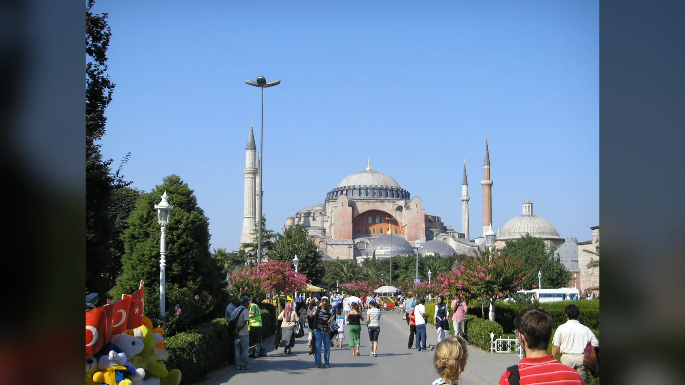
Bugün İstanbul’da gördüğümüz Ayasofya, aynı yerde yükselen üçüncü büyük kilisedir. İmparator I. Justinianus tarafından Nika İsyanı’nın ardından 532’de başlatılan yapı, Trallesli Anthemios ile Miletoslu İsidoros’un yönetiminde yaklaşık beş yılda tamamlandı ve 27 Aralık 537’de ibadete açıldı. Yaklaşık dokuz yüzyıl boyunca Konstantinopolis’in başlıca imparatorluk kilisesi olarak kullanılan yapı 1453’te İstanbul’un Osmanlılar tarafından fethinden sonra camiye çevrildi; 24 Kasım 1934 tarihli Bakanlar Kurulu kararının ardından 1935’te müze olarak açıldı ve 2020’deki hukuki-idari sürecin sonunda yeniden cami statüsü kazandı.
Bu kronoloji Ayasofya’nın hikâyesinin iskeletidir, fakat yapının neden olağanüstü olduğunu tek başına açıklamaz. 537’de açılan bina bugün karşımızda duran yapının çekirdeğidir; buna rağmen kubbesi, taşıyıcı sistemi, mozaikleri, payandaları, minareleri, mihrap ve mahfilleri, türbeleri, hat levhaları ve restorasyon izleri farklı yüzyıllara aittir. İlk ana kubbe 558’de çöktü. Daha sonraki depremler yapının bazı bölümlerini tekrar yıktı. Bizans imparatorları, Osmanlı sultanları, mimarlar ve modern koruma ekipleri her defasında Ayasofya’ya müdahale etti. Onun yaklaşık 1.500 yıldır ayakta kalması, hiç değişmemiş olmasının değil, sürekli onarılmış olmasının sonucudur.
Ayasofya’nın önemi din değiştiren bir anıt olmasından da geniştir. Altıncı yüzyıl mühendisliğinin sınırlarını zorlayan kubbesi, Bizans imparatorluk törenleri, ikonoklazm sonrası figürlü mozaikleri, 1204 Latin işgali, 1453 sonrasında Osmanlı başkentinin büyük camilerinden birine dönüşmesi, Mimar Sinan’ın güçlendirmeleri, Fossati kardeşlerin 19. yüzyıl restorasyonu ve Cumhuriyet dönemindeki müzecilik çalışmaları aynı binada üst üste durur. “Özgün Ayasofya”yı tek bir tarihte dondurmak bu nedenle güçtür: yapı, farklı dönemlerin birbirini tamamen silmediği bir mimarlık tarihidir.
Ayasofya Ne Zaman ve Kim Tarafından Yapıldı?
Günümüzdeki Ayasofya 532–537 yılları arasında I. Justinianus tarafından yaptırıldı. İnşanın tasarım ve uygulamasında Trallesli Anthemios ile Miletoslu İsidoros görevlendirildi. Kaynakların onları yalnız günümüzdeki anlamıyla “mimar” diye değil, geometri ve mekanik bilgisi güçlü kişiler olarak göstermesi önemlidir. Justinianus’un projesi alışılmış bir bazilikayı büyütmekten ibaret değildi; uzunlamasına kilise düzeniyle dev merkezi kubbenin etkisini tek iç mekânda birleştiren çok iddialı bir yapı tasarlanmıştı.
İnşaatın beş yıl gibi kısa bir sürede tamamlanması, imparatorluk başkentinin kaynaklarının projeye aktarılmasıyla mümkündü. Prokopios, Yapılar adlı eserinde Ayasofya’yı Justinianus döneminin görkemini gösterecek biçimde över. Metin eşsiz bir çağdaş tanıklıktır, fakat tarafsız şantiye raporu değildir; imparatorun yapı faaliyetlerini yüceltmek amacıyla kaleme alınmıştır. Malzeme, iş gücü ve mimari hakkındaki ayrıntıları kullanırken eserin bu niteliğini akılda tutmak gerekir.
Ayasofya’nın inşasında farklı renk ve kökenlerde mermerler kullanıldı. Prokonnesos mermeri, yeşil Tesalya taşı, porfir ve başka değerli taşlar iç mekânın renk düzenine katıldı. Daha eski yapılardan devşirilen mimari parçaların, yani spolia kullanımının bulunduğu kabul edilir; fakat internette sık tekrarlanan “sekiz sütun kesin Artemis Tapınağı’ndan getirildi” gibi her köken hikâyesi aynı sağlamlıkta değildir. Geç antik imparatorluk şantiyelerindeki malzeme dolaşımı ile daha sonraki efsaneleri birbirinden ayırmak gerekir.
Günümüzdeki Ayasofya Neden Üçüncü Yapıdır?
Ayasofya adı bugünkü Justinianus yapısından daha eskidir. Aynı bölgede ondan önce iki büyük kilise bulunuyordu. Bu erken yapıların planını ve görünüşünü bugünkü Ayasofya kadar ayrıntılı bilmiyoruz; yazılı kaynaklar ve sınırlı arkeolojik kalıntılar üzerinden yeniden kuruyoruz. Üçüncü yapının kubbesini, galerilerini veya süsleme düzenini geriye doğru ilk iki kiliseye taşımak hatalıdır.
Birinci Ayasofya ve 404 olayları
İlk büyük kilise 4. yüzyılda, genellikle II. Constantius döneminde 360 yılıyla ilişkilendirilen açılışla kaynaklarda görünür. “Büyük Kilise” olarak anılan yapı daha sonra Hagia Sophia, yani “Kutsal Bilgelik” adıyla özdeşleşecekti. Ad, Sophia adlı bir azizeye değil, ilahî bilgeliğe gönderme yapar.
404 yılında Patrik Ioannes Chrysostomos’un sürgüne gönderilmesi çevresinde çıkan olaylar sırasında kilise yangında ağır hasar gördü. İlk yapının fiziksel biçimine dair bilgimiz sınırlıdır. Bugün ziyaretçinin gördüğü ana mekânın “Konstantin’in kilisesinden kaldığı” yönündeki popüler anlatılar bu nedenle doğru değildir.
II. Theodosius’un yaptırdığı ikinci kilise
İkinci Ayasofya, İmparator II. Theodosius döneminde 415’te açıldı. Bugünkü yapının batı tarafında ortaya çıkarılan mimari parçalar, bu Theodosius yapısıyla ilişkilendirilir. Anıtsal giriş cephesine ait olduğu düşünülen parçalar, kuzulu kabartmalar ve mimari elemanlar ikinci kilisenin maddi izlerini oluşturur.
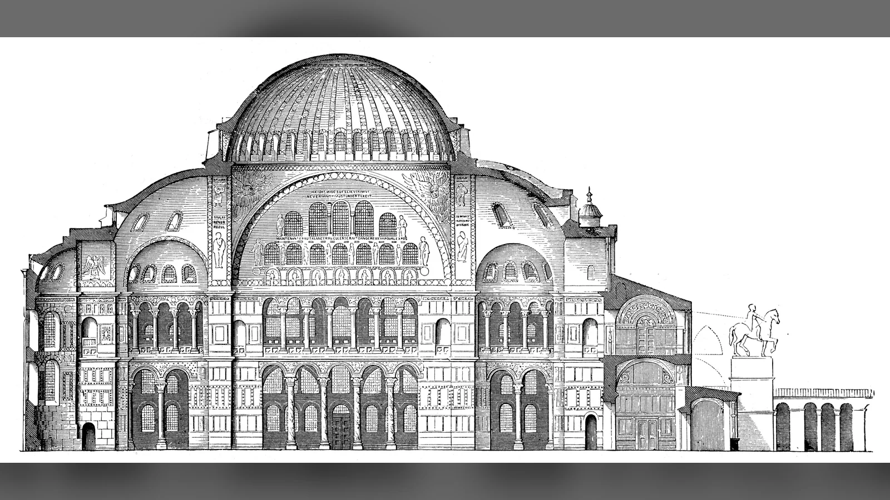
Bu ikinci yapı da yaklaşık bir yüzyıl yaşayabildi. Ocak 532’de Justinianus yönetimine karşı patlayan Nika İsyanı Konstantinopolis’in geniş kesimlerini etkiledi. Hipodrom çevresindeki siyasi şiddet ve yangınlar sırasında Ayasofya da yandı. Justinianus isyanı bastırdıktan sonra eski kiliseyi onarmak yerine çok daha iddialı yeni bir yapı kurmaya girişti.
Nika İsyanı yalnızca Ayasofya’nın fiziksel öncülünü ortadan kaldırmadı; yeni yapının siyasi anlamını da belirledi. İsyan sırasında imparatorluk otoritesi ciddi biçimde sarsılmış, Justinianus bir süre tahtını kaybetme tehlikesiyle karşılaşmıştı. İsyanın kanlı biçimde bastırılmasından hemen sonra başlayan büyük inşa programı, başkentin merkezini yeniden düzenlerken iktidarın görünürlüğünü de yeniden kuruyordu.
Justinianus Neden Yeni Bir Ayasofya Yaptırdı?
Justinianus’un saltanatı Roma hukukunun derlenmesinden Kuzey Afrika ve İtalya’daki fetihlere, büyük yapı programlarından teolojik mücadelelere kadar imparatorluk ölçeğinde iddialı projelerle tanınır. Ayasofya bu programın başkentteki en görünür ifadesiydi. Yeni kilisenin Nika İsyanı’nın ardından yükselmesi, imparatorun hem Tanrı’ya adanmış büyük bir ibadet mekânı hem de yeniden tesis edilen siyasi düzenin anıtını oluşturmasına imkân verdi.
Yapının açılışıyla ilişkilendirilen en ünlü sözlerden biri Justinianus’un “Süleyman, seni geçtim” dediği iddiasıdır. Cümle popüler anlatıda çoğu zaman 537’den kalma stenografik kayıt gibi aktarılır. Oysa ifade çağdaş Prokopios’ta değil, daha sonra oluşan Ayasofya anlatı geleneğinde karşımıza çıkar. Bu nedenle Justinianus’un tarihsel olarak kesin biçimde söylediği doğrulanmış bir cümle değil, Ayasofya’nın sonraki hafızasında yapının Süleyman Tapınağı’yla yarışan büyüklüğünü ifade eden geç dönem geleneği olarak kullanılmalıdır.
Ayasofya’nın “Kutsal Bilgelik” adı da yapının programını anlamada önemlidir. Kilise belirli bir azize adanmamıştı. Hagia Sophia, Hristiyan teolojisindeki ilahî bilgeliğe gönderme yapıyordu. Konstantinopolis’in Büyük Kilisesi olarak patriklik litürjisinin, imparatorluk törenlerinin ve başkentin kamusal-dinî hayatının merkezinde yer alması bu soyut adın siyasi ağırlığını artırdı.
Ayasofya’nın Mimarları Anthemios ve İsidoros Kimdi?
Trallesli Anthemios ile Miletoslu İsidoros, antik ve geç antik bilim geleneğiyle bağlantılı iki eğitimli uzmandı. Anthemios matematik ve mekanikle, İsidoros ise geometri ve bilimsel metinlerle ilişkilendirilir. Onlara “mimar” demek pratik olarak doğrudur; fakat modern bir mimarlık bürosunun iki baş tasarımcısı gibi düşünmek mesleki dünyalarını tam karşılamaz. Altıncı yüzyılın büyük şantiyesinde geometri, yapı mekaniği ve uygulama birbirine daha yakındı.
Anthemios’un inşaat tamamlanmadan önce öldüğü kabul edilir; İsidoros da ilk kubbenin 558’de çökmesinden sonraki büyük yeniden yapımı görmedi. Çöken kubbeyi yeniden tasarlayan kişi, kaynaklarda Genç İsidoros diye anılan Miletoslu İsidoros’un yeğenidir. Böylece “Ayasofya’nın mimarı kimdir?” sorusunun kısa cevabı Anthemios ve İsidoros olsa da bugünkü üst yapının oluşumunda ikinci kuşak bir tasarımcı da belirleyici rol oynadı.
Ayasofya Nasıl İnşa Edildi?
Ayasofya’nın planı, uzunlamasına bazilika geleneği ile merkezi kubbeli mekân düşüncesini olağanüstü ölçekte birleştirir. Batıdan ana nefe girildiğinde bakış doğudaki apsise yönelir; fakat mekânı belirleyen asıl hareket yukarı doğrudur. Merkezi kubbe, doğu ve batıdaki büyük yarım kubbeler ve bunlardan aşağı doğru açılan daha küçük eksedralar sayesinde iç hacim basamak basamak genişler.
Ana taşıyıcılar dört büyük paye ve bunların arasındaki kemerlerdir. Kubbenin dairesel tabanıyla alttaki yaklaşık kare mekân arasındaki geçiş pandantiflerle sağlanır. Pandantif, basitçe “kubbenin altındaki üçgen” değildir; küresel yüzey parçaları kubbe yüklerini kemerler ve büyük payelere aktarırken dairesel üst yapının kare plana oturmasını mümkün kılar. Sistem Ayasofya’da icat edilmiş değildir, fakat burada ulaştığı ölçek ve mekânsal bütünlük altıncı yüzyıl için sıra dışıdır.
Kuzey ve güneydeki yan nefler ile üst galeriler merkezi alanın çevresinde ikinci bir dolaşım katmanı oluşturur. Sütun dizileri ana nefi bütünüyle kapatmak yerine onu çerçeveler. Mermer kaplamalarda taşın damarları karşılıklı açılarak simetrik desenlere dönüştürülmüştür. Duvar yüzeyi ağır bir kütle olmaktan çıkar, renkli ve hareketli bir kaplama etkisi kazanır.
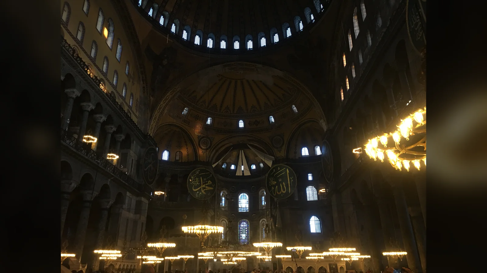
Kubbe neden bir mühendislik devrimiydi?
Ayasofya kubbesinin çapı ölçüm yöntemine göre yaklaşık 31 metre çevresinde verilir; zeminden tepeye yüksekliği de yaklaşık 55 metre dolayındadır. Yapının geometrisi tam bir ideal daire ve kusursuz simetriden oluşmadığı, yüzyıllar boyunca deformasyon ve onarım gördüğü için farklı yayınlarda ölçüm farklarıyla karşılaşmak normaldir.
Kubbenin tabanındaki kırk pencere, taşıyıcı yüzeyin görsel ağırlığını azaltır. Gün ışığı kubbenin alt kenarında kesintili bir ışık halkası meydana getirir. Prokopios’un kubbenin gökten asılıymış gibi göründüğünü anlatan tasviri gerçek bir teknik açıklama değil, bu görsel etkinin çağdaş edebî ifadesidir. Işık, altın mozaik yüzeylerle birleştiğinde sınırlar daha da çözülür.
Mühendislik cesareti aynı zamanda kırılganlık yarattı. Geniş açıklıklar, büyük kubbenin yatay itmeleri, kemer ve payelerin davranışı ile deprem yükleri yapı tarihinin temel sorunları oldu. Ayasofya’nın biçimi, estetik başarı ile yapısal riskin birbirinden ayrılmadığı bir deneydi.
İç mekânın etkisi kubbeyle sınırlı değildir. Doğu ve batı yarım kubbeleri merkezi hacmin yükünü ve görsel yönünü kademeli biçimde dağıtır. Alt seviyedeki sütunlar, galerilerin ritmi ve apsise doğru daralan perspektif ziyaretçinin bakışını aynı anda hem ileri hem yukarı taşır. Bu nedenle Ayasofya’yı yalnız kubbe çapıyla değerlendirmek, tasarımın en önemli özelliği olan mekânsal sürekliliği gözden kaçırır.
Ayasofya’nın İlk Kubbesi Neden Çöktü?
537’de açılan Ayasofya’nın ilk kubbesi bugünkü kubbeyle aynı değildir. İnşa tamamlandıktan sonra meydana gelen depremler, özellikle 553 ve 557 sarsıntıları, üst yapıda hasarı büyüttü. 7 Mayıs 558’de kubbenin önemli bir bölümü çöktü. İlk kubbenin oldukça basık geometrisinin ve taşıyıcı sistemde oluşan deformasyonların soruna katkıda bulunduğu düşünülür.
Yeniden yapım Genç İsidoros’un yönetiminde gerçekleştirildi. Yeni kubbe daha yüksek bir profile kavuşturuldu; böylece yatay itkinin azaltılması amaçlandı. Ayasofya 562’de yeniden kutsanarak açıldı. Bu müdahale bugün görülen kubbe sisteminin temel aşamalarından biridir, fakat sonraki yüzyıllar da üst yapıyı değiştirmeye devam etti.
989 depremi batı kemeri ve kubbe bölümlerinde büyük hasara yol açtı; Ermeni mimar Trdat’ın onarımla ilişkilendirildiği kaynaklar vardır. 1346’da doğu tarafındaki kemer ve kubbe bölümü çöktü ve yapı bir süre kapalı kaldı. Osmanlı döneminde de depremler, çatlaklar ve dışa açılma eğilimi nedeniyle düzenli müdahaleler gerekti.
Bu tarih, Ayasofya’nın kubbesini tek bir 537 tarihli mühendislik nesnesi gibi düşünmeyi engeller. Bugün gördüğümüz biçim, Justinianus dönemindeki tasarımın ana fikrini korurken farklı yüzyıllardaki yeniden yapımların izlerini taşır. Yapının büyük ölçeği bir başarı kadar bakım zorunluluğu da yarattı; kubbenin etkileyici hafifliği, onu taşıyan karmaşık sistemin sürekli gözetimini gerektirdi.
Bizans Döneminde Ayasofya Ne İçin Kullanılıyordu?
Ayasofya Konstantinopolis’in sıradan bir mahalle kilisesi değildi. Patriklik merkezi, büyük litürjilerin sahnesi ve imparatorluk tören düzeninin başlıca mekânlarından biriydi. İmparatorun saray ile kilise arasındaki törensel hareketi, belirli kapılar, bölümler ve din adamlarıyla kurduğu ilişkiler mekânın siyasi hiyerarşisini görünür kılıyordu.
İmparatorluk taç giyme törenleri zaman içinde farklı biçimler aldı; Ayasofya bu törenlerin en önemli sahnelerinden biri hâline geldi. Ana nef, solea, kutsal alan, galeriler ve giriş mekânları herkes için aynı şekilde kullanılmıyordu. Statü, dinî görev ve saray protokolü mekân içindeki hareketi etkiliyordu.
Bizans litürjisinde ses de mimari kadar belirleyiciydi. Dev hacim, mermer yüzeyler ve kubbeler uzun yankı süreleri yaratıyordu. İlahiler, tütsü, kandiller, altın zeminli bezemeler ve gün ışığı birlikte algılanıyordu. Ayasofya’nın sanat tarihini yalnız plan şeması üzerinden okumak bu nedenle eksik kalır; yapı hareket, ses ve ışıkla deneyimlenen törensel bir çevreydi.
Ayasofya’nın başkentteki konumu kriz zamanlarında da görünürdü. İmparatorluk siyaseti, patriklik mücadeleleri ve toplumsal gerilimler kilisenin kapılarında veya içinde yankılanabiliyordu. Yapı dinî otoritenin yanında imparatorluk düzeninin de kamusal sahnesi olduğu için, Bizans toplumundaki değişimler mimarinin kullanımına doğrudan yansıyordu.
İkonoklazm Ayasofya’yı Nasıl Etkiledi?
Bizans İkonoklazmı, kabaca 8. ve 9. yüzyıllarda kutsal figürlerin tasvir edilmesi çevresinde yaşanan siyasi ve teolojik mücadeleleri ifade eder. Ayasofya bu çatışmanın merkezindeki başkent kilisesiydi. Figürlü imgelerin kaldırılması veya değiştirilmesi, haç gibi figürsüz motiflerin öne çıkması yapının dekorasyon tarihinde iz bıraktı.
İkonoklazmı “bir gecede bütün mozaikler kazındı” şeklinde anlatmak yanıltıcıdır. Ayasofya’nın Justinianus dönemindeki üst dekorasyonunun zaten büyük ölçüde figürsüz altın zeminler, haçlar ve bezemelerden oluştuğu düşünülür. Bugün en ünlü figürlü mozaiklerin önemli bölümü 843’te ikonaların yeniden kabul edilmesinden sonraki dönemlere aittir.
Apsisteki Meryem ve Çocuk İsa mozaiği bu dönüşümün en önemli eseridir. 867’de Patrik Photios’un vaazıyla ilişkilendirilen açılış, figürlü kutsal tasvirin yeniden kamusal ve anıtsal biçimde ortaya çıkışını gösterir. Mozaiğin altında daha önce bir haç kompozisyonunun bulunduğuna dair izler ikonoklazm ile sonrası arasındaki değişimi aynı yüzeyde okunabilir kılar.
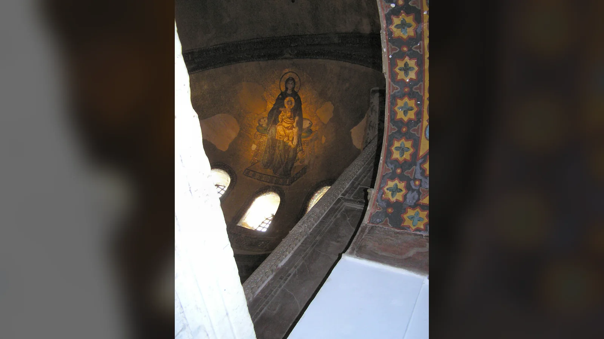
Ayasofya Mozaikleri Ne Anlatıyor?
Ayasofya mozaikleri tek seferde hazırlanmış bütünlüklü bir “resim programı” değildir. Yaklaşık altı yüzyıla yayılan farklı siyasi ve dinî dönemlerin ürünleridir. Bir mozaiği yalnız “şu kişi şunu simgeler” diye çözmek yerine nerede bulunduğuna, hangi izleyiciye göründüğüne ve hangi dönemde eklendiğine bakmak gerekir.
Apsis mozaiğinde tahtta oturan Meryem kucağında Çocuk İsa’yı taşır. Altın zemin figürleri dünyevi bir manzaradan ayırır. Apsisin yüksek konumu, kutsal alanla görsel ilişki kurar. Yakındaki başmelek figürlerinden Gabriel daha iyi korunmuştur; diğer figürler parçalıdır.
İmparator Kapısı üzerindeki mozaik, tahtta İsa’yı ve önünde secdeye yaklaşan bir imparatoru gösterir. İmparatorun kimliği konusunda VI. Leon en yaygın önerilerden biridir, fakat teşhis tartışmasız değildir. Kapının törensel önemi düşünüldüğünde kompozisyon imparatorluk otoritesini İsa’nın üstün hükmü altında gösteren güçlü bir görsel düzen kurar.
Güneybatı vestibül mozaiğinde Meryem ve Çocuk İsa’nın iki yanında Konstantin ile Justinianus yer alır. Konstantin kentin modelini, Justinianus ise Ayasofya’nın modelini sunar. Yaklaşık 10. yüzyıl sonuna tarihlenen kompozisyon, yüzyıllar önce yaşamış iki kurucu imparatoru aynı kutsal sahnede bir araya getirir. Bu bir tarih resmi değil, Konstantinopolis ve Büyük Kilise’nin kurucu hafızasını yeniden kuran imgedir.
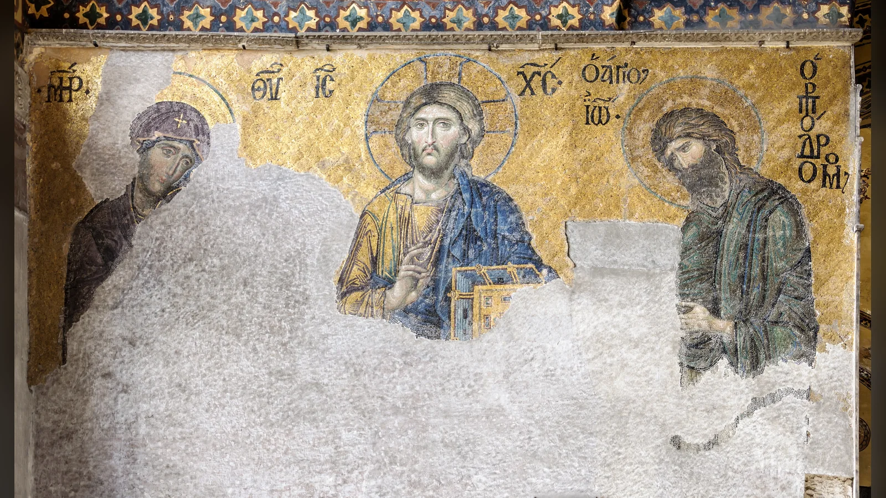
Güney galerideki Deisis mozaiği İsa’yı merkezde, Meryem ve Vaftizci Yahya’yı iki yanında şefaat eder biçimde gösterir. Eserin tarihlendirilmesi konusunda farklı öneriler bulunmakla birlikte çoğu değerlendirme onu 13. yüzyılın ikinci yarısıyla ilişkilendirir. Yüzlerdeki yumuşak modelleme, renk geçişleri ve güçlü psikolojik ifade nedeniyle Bizans sanatının en çok tartışılan eserlerinden biridir. “Rönesans’ı başlatan mozaik” gibi sloganlar bu niteliği açıklamaz; eserin değeri kendi Bizans bağlamında, figürlerin hacim ve duygu etkisini mozaik tekniğiyle kurabilmesindedir.
Zoe mozaiğinde İsa’nın iki yanında İmparatoriçe Zoe ve eşi yer alır. Bugün eş figürü IX. Konstantinos Monomakhos olarak görünür; yüz ve yazıların değiştirilmiş olması, Zoe’nin değişen evlilik ve iktidar ilişkilerinin mozaiğe fiziksel olarak yansıdığı tartışmasını doğurmuştur. İmparatorluk bağışının litürjik mekânda görünür hâle gelmesi, portrenin yalnız kişisel anı değil siyasi temsil olduğunu gösterir.
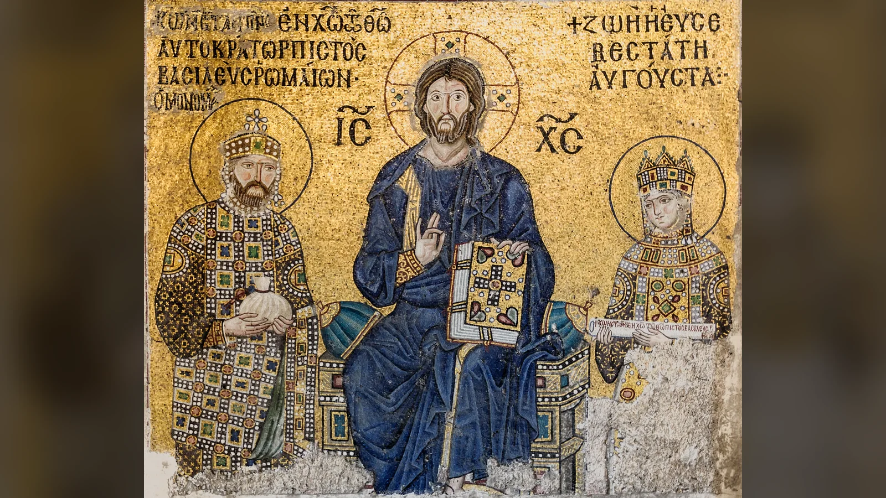
Komnenos mozaiğinde II. İoannes Komnenos, eşi İrene ve Meryem ile Çocuk İsa yer alır; yakındaki Aleksios portresi aile grubunu genişletir. İmparator ve imparatoriçe bağış sunan hükümdarlar olarak kutsal figürle aynı altın zeminde yer alır. Bu mozaikler Bizans sarayının Ayasofya’daki görünürlüğünü somutlaştırır.
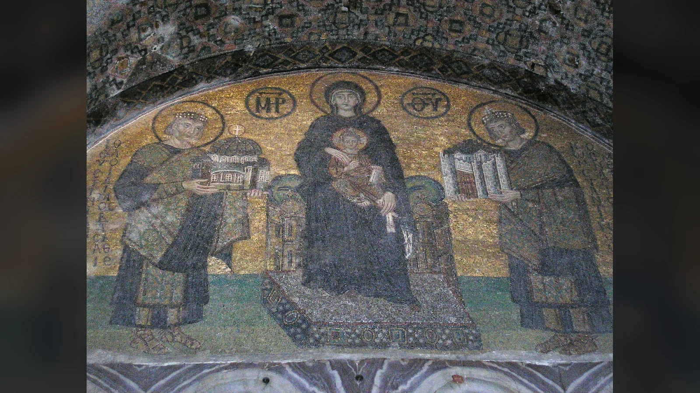
Mozaiklerin günümüzde parçalı görünmesi de tarihinin parçasıdır. Depremler, nem, yapısal hareket, örtme-açma işlemleri ve restorasyonlar yüzeyleri etkiledi. Bugün görülen bir paneli “Bizans döneminden hiç dokunulmadan kalmış görüntü” gibi sunmak, mozaiklerin kendi koruma tarihini siler.
1204 Latin İşgali Ayasofya’ya Ne Yaptı?
Dördüncü Haçlı Seferi’nin 1204’te Konstantinopolis’i ele geçirmesi Ayasofya’nın tarihinde ağır bir kırılmadır. Kent yağmalandı; kiliseler, saraylar ve hazineler büyük kayıplara uğradı. Ayasofya da yağmadan etkilendi ve Latin İmparatorluğu döneminde Latin dinî kullanımına geçti. 1261’de VIII. Michael Palaiologos Konstantinopolis’i geri aldığında yapı yeniden Bizans Ortodoks kullanımına döndü.
1204 yağmasının ayrıntıları anlatılırken İstanbul’dan Venedik’e taşınan her ünlü nesneyi doğrudan Ayasofya’ya bağlamak güvenli değildir. Örneğin bugün San Marco’nun tarihiyle özdeşleşen bronz atların Konstantinopolis’ten götürüldüğü güçlü biçimde kabul edilir; fakat bunların Ayasofya’dan alındığını söylemek yerine Hipodrom’la ilişkilendirilen kökeni belirtmek gerekir.
Venedik doçu Enrico Dandolo’nun Ayasofya’da gömüldüğü yönündeki ortaçağ geleneği daha karmaşıktır. Güney galeride bugün “Henricus Dandolo” adıyla görülen taş işaret, özgün 1205 mezar anıtının eksiksiz biçimde korunmuş hâli değildir. Dandolo’nun mezarının sonraki yüzyıllarda tahrip edildiği, kalıntılarının akıbetinin bilinmediği kabul edilir. Bugünkü işaret tarihsel hafızayı gösterir; altında Dandolo’nun mezarının bozulmadan durduğunu kanıtlamaz.
Latin işgali sonrasında Ayasofya yalnız yağmanın değil, ekonomik ve yapısal gerilemenin etkilerini de taşıdı. 14. yüzyıldaki depremler ve çöküşler geç Bizans devletinin sınırlı kaynaklarıyla onarıldı. 1453’e gelindiğinde yapı hâlâ Konstantinopolis’in en büyük kutsal mekânıydı, fakat Justinianus’un açılışındaki fiziksel durumda değildi.
1453’te Ayasofya Nasıl Camiye Dönüştürüldü?
29 Mayıs 1453’te II. Mehmed’in Konstantinopolis’i fethetmesinin ardından Ayasofya camiye çevrildi. Dönüşüm yeni başkentin siyasi ve dinî düzeninin parçasıydı. Yapının büyük ölçeği ve eski imparatorluk merkeziyle ilişkisi, onu Osmanlı İstanbul’unda da yüksek sembolik değere sahip bir mekân hâline getirdi.
Fetihten hemen sonra Hristiyan litürjisine ait düzenin yerine İslami ibadet için gerekli unsurlar oluşturuldu. Kıble yönüne göre mihrap eklendi; minber, müezzin mahfilleri ve sonraki dönemlerde hünkar mahfili gibi öğeler yapıya katıldı. Apsis doğuya yönelirken Mekke yönü İstanbul’dan daha güneye düştüğü için mihrap ekseni apsisle tam çakışmaz. İç mekâna dikkatle bakıldığında bu yön farkı okunabilir.
Ayasofya’nın çevresinde zamanla medrese, imaret, türbeler, şadırvan, kütüphane ve başka yapılar gelişti. Eski Bizans kilisesi tek başına bir camiye dönüştürülmekle kalmadı; Osmanlı vakıf sistemi içinde yaşayan daha geniş bir külliye çevresine yerleşti.
Fatih Sultan Mehmet’in İstanbul’u nasıl fethettiğini ayrıntılı anlatan süreç, Ayasofya’nın statü değişikliğinin siyasi bağlamını da açıklar. Fakat 1453 dönüşümünü “Fatih bütün mozaikleri yok etti” cümlesine indirgemek tarihsel olarak doğru değildir. Figürlü mozaiklerin örtülmesi tek bir günde tamamlanmış homojen bir işlem değildi; farklı yüzeylerin görünürlüğü, onarımlar ve İslami bezeme uygulamaları yüzyıllar içinde değişti.
Osmanlılar Ayasofya’yı Nasıl Değiştirdi ve Korudu?
Ayasofya yaklaşık beş yüzyıl boyunca Osmanlı camisi olarak kullanıldı. Bu uzun dönem, minare eklenip yapının olduğu gibi bırakıldığı bir ara safha değildir. Deprem hasarları, yapısal hareketler, ibadet ihtiyaçları ve saray temsilinin değişmesi düzenli müdahaleleri beraberinde getirdi.
Minareler farklı tarihlerde yapıldı ve bugünkü dört minare tek bir inşa kampanyasının ürünü değildir. Fetihten sonra erken bir minare eklendi; sonraki sultanlar döneminde minareler yenilendi ve çoğaltıldı. II. Bayezid ve özellikle II. Selim–III. Murad dönemleri bugünkü siluetin oluşmasında belirleyicidir. Minareleri yalnız “İslamlaştırma işareti” olarak okumak da eksiktir; ezan işlevinin yanı sıra yüzyıllar içinde yapının dış kompozisyonunun ayrılmaz parçalarına dönüştüler.
- yüzyılda Mimar Sinan’ın Ayasofya üzerindeki çalışmaları yapının korunma tarihinde özel yere sahiptir. Sinan yapıyı baştan inşa etmedi. Mevcut taşıyıcı sistemi değerlendirdi, dışa açılma ve yapısal zayıflıklara karşı payandalar ve destek düzenlemeleriyle müdahale etti. Osmanlı dönemindeki güçlendirmelerin tamamını tek başına Sinan’a atfetmek de doğru değildir; fakat onun dönemindeki müdahaleler Ayasofya’nın deprem davranışını ve dış kütlesini uzun vadede etkiledi.
- Selim’in türbesi Ayasofya çevresindeki Osmanlı hanedan nekropolünün başlangıcını oluşturdu. III. Murad ve III. Mehmed türbeleriyle şehzadeler türbesi çevredeki hanedan hafızasını yoğunlaştırdı. Böylece Bizans imparatorluk kilisesinin çevresi Osmanlı hanedanının mezar alanlarından birine dönüştü.
I. Mahmud döneminde 18. yüzyılda yapılan kütüphane, şadırvan, imaret ve sıbyan mektebi gibi ekler caminin sosyal ve kültürel işlevini genişletti. Kütüphanenin çinili ve tunç şebekeli iç düzeni, Ayasofya’daki Osmanlı sanatının yalnız büyük mimari eklerden ibaret olmadığını gösterir.
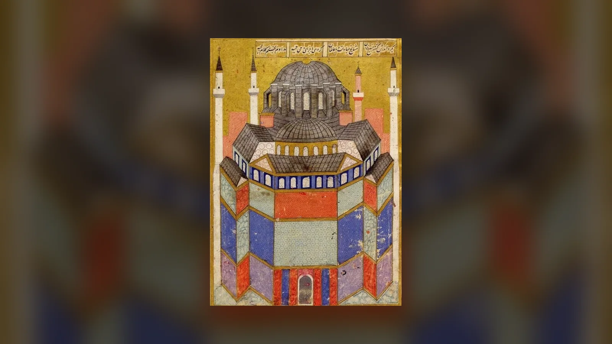
- yüzyıl Şehname-i Selim Han minyatüründe Ayasofya, Osmanlı camisinin şehir içindeki görünümüyle betimlenir. Kaynak; Kamu malı.
Bugün ana mekânda görülen sekiz büyük yuvarlak hat levhası 19. yüzyılda Kazasker Mustafa İzzet Efendi tarafından hazırlandı. Allah, Muhammed, dört halife, Hasan ve Hüseyin adlarını taşıyan levhalar, boyutları nedeniyle merkezi mekânın görsel ölçeğini doğrudan değiştirir. İnternette sık geçen “dünyanın en büyük hat levhaları” ifadesi ölçütü tanımlanmadan kesin bir rekor cümlesine dönüşmemelidir. Güvenli olan, yaklaşık 7,5 metre çapındaki bu levhaların anıtsal boyutlarıyla Ayasofya iç mekânının en baskın Osmanlı unsurlarından olmasıdır.
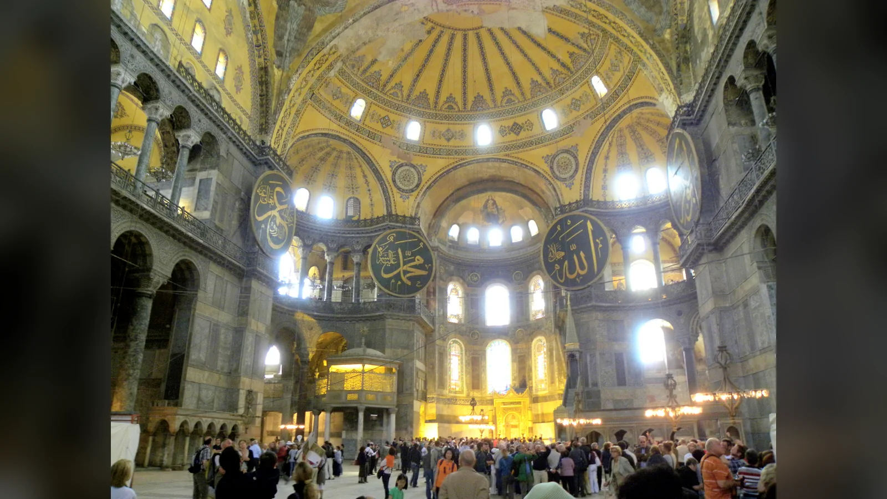
Osmanlı döneminin yapıya etkisi iki yönlüydü. Yeni ibadet düzeni Bizans iç mekânının kullanımını değiştirdi; aynı anda yapı başkentin büyük selatin camilerinden biri olarak sürekli bakım gördü. Ayasofya’nın bugüne ulaşmasını “Osmanlılar sadece dönüştürdü” ya da “hiçbir şeyi değiştirmeden korudu” gibi iki uç cümleden biriyle açıklamak mümkün değildir. Dönüştürme ve koruma aynı tarihsel süreçte birlikte gerçekleşti.
Fossati Kardeşlerin Restorasyonu
Sultan Abdülmecid döneminde 1847’de başlayan büyük restorasyon Gaspare ve Giuseppe Fossati kardeşlerin yönetiminde yürütüldü. Yapının statik sorunları, kubbe ve kemerleri, eğilmiş sütunları, iç ve dış yüzeyleri üzerinde geniş kapsamlı çalışma yapıldı. Ana kampanya 1849’da ibadete yeniden açılışla sonuçlandı; bazı çalışmalar sonraki yıllara uzandı.
Restorasyonun bugün en çok hatırlanan yönü Bizans mozaiklerinin açığa çıkarılmasıdır. Fossatiler sıva ve örtülerin altında kalan figürlü mozaikleri gördü, temizledi ve belgeledi; fakat caminin ibadet işlevi sürdüğü için figürlerin önemli bölümü yeniden örtüldü. Bunu “mozaikleri buldular ve sonra yok ettiler” şeklinde anlatmak dönemin koşullarını çarpıtır. Mozaiklerin belgelenmiş olması, 20. yüzyıldaki çalışmalar için değerli görsel kayıt bıraktı.
Gaspare Fossati’nin yayımladığı litografik albüm, restorasyon sonrası Ayasofya’nın 19. yüzyıl görünümünü belgeleyen temel kaynaklardan biridir. Albümde mimari, iç mekân, tören ve ziyaret sahneleri sanatçının düzenlemeleriyle aktarılır; dolayısıyla fotoğrafik kayıt değildir, fakat dönemin restorasyon anlayışını ve yapının algılanışını gösterir.
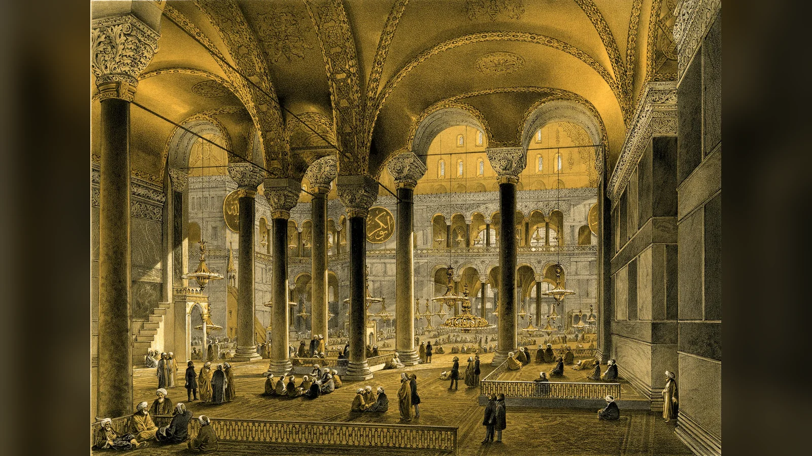
Fossati döneminde yeni hünkar mahfili de yapıldı. Kazasker Mustafa İzzet Efendi’nin büyük levhaları bu kampanya bağlamında yerleştirildi. Böylece 19. yüzyıl restorasyonu “Bizans katmanlarını ortaya çıkarma” ile “Osmanlı camisini yenileme” işlerinin aynı anda yürütüldüğü bir süreçti.
Restorasyonun yapısal tarafı da mozaikler kadar önemlidir. Eğilmiş galeri sütunları ve ana kubbedeki sorunlar dönemin mühendislik imkânlarıyla ele alındı. 19. yüzyıl müdahalelerinin bazı estetik kararları bugün farklı değerlendirilebilir; yine de Fossati kampanyası Ayasofya’nın modern koruma tarihinin başlangıç noktalarından biridir.
Ayasofya Ne Zaman ve Neden Müze Oldu?
24 Kasım 1934 tarihli ve 2/1589 sayılı Bakanlar Kurulu kararıyla Ayasofya’nın müzeye çevrilmesine karar verildi. Yapı 1935’te müze olarak ziyarete açıldı. Karar tarihi ile fiilî müze açılışını birbirine karıştırmamak gerekir: 1934 hukuki-idari kararın, 1935 ise yeni kullanımın başladığı yıl olarak öne çıkar.
Müzeleşme süreci, mozaik araştırmalarının başlamasıyla aynı şey değildir. Thomas Whittemore yönetimindeki Byzantine Institute of America 1930’lardan itibaren mozaikleri açığa çıkarma ve koruma çalışmalarına girişti. Örtü tabakaları dikkatle kaldırıldı; farklı mozaikler farklı tarihlerde ortaya çıkarıldı ve belgelendi. Deisis, imparator portreleri ve başka figürlü yüzeylerin bugünkü sanat tarihi literatüründeki yeri bu uzun konservasyon tarihinden ayrı düşünülemez.
Cumhuriyet döneminde Ayasofya hem müze hem de uluslararası koruma ve araştırma konusu oldu. Yapısal izleme, mozaik konservasyonu, kubbe ve yüzey araştırmaları 20. yüzyıl boyunca sürdü. 1985’te Ayasofya tek başına bağımsız bir UNESCO kaydı olarak değil, “İstanbul’un Tarihî Alanları” Dünya Mirası alanının parçası olarak listeye girdi. UNESCO kaydının bu biçimi önemlidir; Ayasofya’nın korunması Sultanahmet Arkeolojik Parkı ve daha geniş tarihî çevreyle birlikte değerlendirilir.
Müze dönemi yapının Osmanlı katmanlarının silindiği bir safha da değildi. Mihrap, minber, hünkar mahfili, büyük hat levhaları ve başka Osmanlı unsurları yapı içinde kaldı. Figürlü Bizans mozaiklerinin açılmasıyla iki tarihsel görsel sistem aynı mekânda daha açık biçimde yan yana görünür oldu.
Ayasofya 2020’de Neden Yeniden Cami Oldu?
2020’deki değişiklik iki ayrı hukuki-idari adımla gerçekleşti. Danıştay Onuncu Dairesi 2 Temmuz 2020 tarihli kararıyla 24 Kasım 1934 tarihli Bakanlar Kurulu kararını iptal etti. Kararın gerekçesinde taşınmazın Fatih Sultan Mehmet Vakfı mülkiyetindeki vakıf hayratı niteliği ve vakfiye amacı üzerinde duruldu.
10 Temmuz 2020 tarihli Cumhurbaşkanı Kararı ile Ayasofya’nın yönetimi Diyanet İşleri Başkanlığına devredildi ve ibadete açılması kararlaştırıldı. İlk cuma namazı 24 Temmuz 2020’de kılındı. “Danıştay doğrudan camiyi açtı” veya “tek bir Cumhurbaşkanı kararıyla müze statüsü kaldırıldı” gibi ifadeler süreci eksik anlatır; mahkeme kararı ile onu izleyen yürütme işlemini ayırmak gerekir.
Statü değişikliği uluslararası koruma tartışmalarını da beraberinde getirdi. Ayasofya’nın Dünya Mirası niteliği 2020’de sona ermedi; yapı İstanbul’un Tarihî Alanları kapsamındaki konumunu koruyor. UNESCO Dünya Mirası Komitesi sonraki yıllarda yönetim, koruma, ziyaretçi düzeni ve büyük müdahaleler konusunda Türkiye’den bilgi ve değerlendirme talep etmeyi sürdürdü.
Ayasofya’daki Mozaikler Bugün Nasıl Korunuyor?
Cami işlevi ile figürlü Bizans sanatının korunması aynı mekânda yeni bir yönetim düzeni gerektirdi. İbadet sırasında özellikle kıble yönündeki figürlü tasvirlerin görünürlüğü perdeleme ve benzeri uygulamalarla yönetildi; yapının farklı bölümlerindeki mozaiklerin durumu ve ziyaret edilebilirliği aynı değildir.
15 Ocak 2024’te ziyaretçi yönetim planı değiştirilerek turistik ziyaret ile ibadet amaçlı girişler ayrıştırıldı. Galeri katı turistik ziyaret güzergâhının temel parçası hâline getirildi; ziyaretçiler için farklı giriş ve dolaşım düzeni oluşturuldu. Bu düzenleme, ibadet alanındaki yoğunlukla kültürel ziyaret akışını birbirinden ayırmayı amaçlıyordu.
2025 sonu itibarıyla Ayasofya’da büyük restorasyon çalışmaları da sürüyordu. Vakıflar Genel Müdürlüğü, ana kubbenin dış kurşun kaplamalarının yenilenmesi ve deprem güvenliğinin geliştirilmesi için çalışmalar yürütüldüğünü; iç yüzeydeki mozaikleri korumak amacıyla geçici çelik koruma sistemi kurulacağını açıkladı. Bu nedenle Ayasofya’nın “bugün nasıl gezildiği” veya belirli bir mozaiğin hangi açıdan görülebildiği kalıcı tarih bilgisi değildir; restorasyon ve ziyaret yönetimiyle değişebilir.
UNESCO Dünya Mirası Komitesi’nin 2025 değerlendirmesi de Ayasofya’nın koruma ve ziyaretçi koşullarını izlemeye devam etti. 2026’da ortak UNESCO/ICOMOS izleme misyonu talep edildi. Ayasofya’nın bugünkü statüsünü anlatırken “cami oldu, koruma işlevi bitti” ya da tersine “fiilen hâlâ müzedir” gibi iki basit uçtan biri yerine, ibadet, turistik ziyaret ve dünya mirası korumasının aynı yapıda eşzamanlı yönetildiğini söylemek daha doğrudur.
Ayasofya’daki Viking Yazısı Nedir?
Ayasofya’nın mermer korkuluklarına kazınmış runik yazılar, Konstantinopolis’in İskandinav dünyasıyla ilişkisini gösteren küçük fakat etkileyici izlerdir. En ünlüsü güney galeride 1964’te fark edilen yazıdır. Aşınma nedeniyle metnin tamamı okunamaz; güvenle seçilebilen bölüm “-lftan” dizisidir ve runolog Elisabeth Svärdström bunu Halfdan/Halvdan erkek adı olarak yorumlamıştır.
Bu nedenle internette sık görülen “Halfdan buradaydı” çevirisi gerçek bir tam metin gibi kullanılmamalıdır. Yazının geri kalanı büyük ölçüde okunamadığı için yaygın runik formüllerden hareketle “Halfdan bu runları kazıdı” benzeri bir ifade bulunmuş olabileceği tahmin edilir; fakat korunmuş harfler bize bu cümlenin tamamını vermiyor.
Ayasofya’da başka İskandinav runik yazıları da tespit edilmiştir. Kuzey galerideki bir yazıyı Elena Mel’nikova “Arinbárðr reist rúnar þessar”, yani “Arinbárðr bu runları kazıdı” şeklinde okumuştur ve paleografik özelliklerine dayanarak 11. yüzyılın ikinci yarısı ile 12. yüzyılın ilk yarısı çevresine tarihlemiştir.
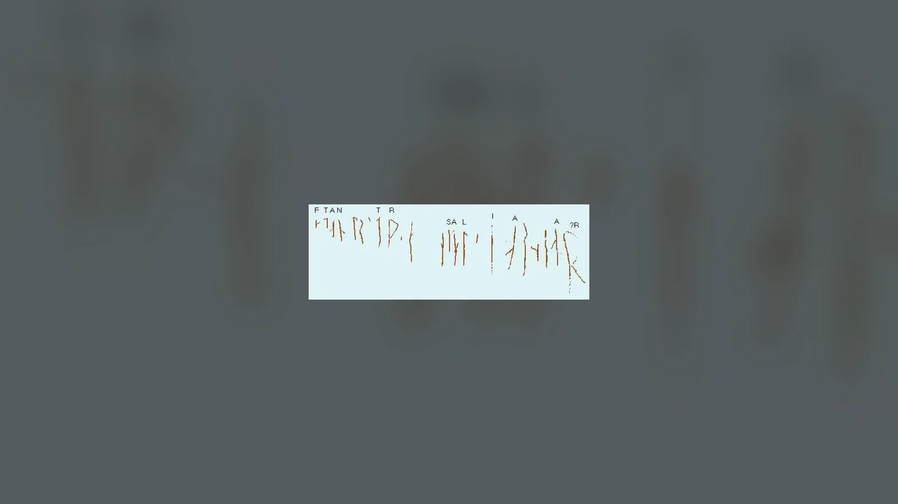
Bu grafitileri Vareg Muhafızlarıyla ilişkilendirmek makuldür. Bizans imparatorlarının hizmetinde İskandinav ve daha sonra Anglo-Sakson savaşçıların bulunduğu Vareg birlikleri iyi belgelenmiştir. Yine de tek tek yazıların sahiplerinin kesin mesleğini bilmiyoruz; asker, tüccar veya hacı ihtimalleri her örnek için aynı kesinlikte dışlanamaz. Mermerdeki birkaç rune, “Vikingler Ayasofya’yı ele geçirdi” anlamına gelmez; Bizans başkentinin çok uluslu dünyasında kuzeyli ziyaretçilerin fiziksel izidir.
Ayasofya’nın Altında Tüneller ve Gizli Odalar Var mı?
Ayasofya’nın altında ve çevresinde su yapıları, kuyular, drenaj kanalları, sarnıçlarla ilişkili boşluklar ve temel sistemine bağlı erişilebilir veya sınırlı erişimli alanlar bulunduğu bilinmektedir. Büyük bir geç antik yapının zemin altında karmaşık altyapıya sahip olması şaşırtıcı değildir. Araştırmalar çeşitli boşlukları ve su sistemlerini belgelemiştir.
Buradan “Ayasofya’nın altından Topkapı Sarayı’na, Yerebatan Sarnıcı’na, hatta Adalar’a uzanan gizli tünel ağı bulundu” sonucuna atlamak mümkün değildir. İnternette dolaşan bu tür haritaların önemli bölümü arkeolojik kazıyla doğrulanmış güzergâhlar değildir. “Tünel” sözcüğü de yanıltıcı olabilir: drenaj kanalı, sarnıç bağlantısı, temel boşluğu ve insanların yürüyebileceği geçit aynı mimari kategori değildir.
Ayasofya’nın yeraltı araştırmalarını zorlaştıran etkenlerden biri yapının sürekli kullanımda ve son derece hassas olmasıdır. Her boşluğun kazılması veya geniş ölçekte açılması koruma açısından mümkün değildir. “Bilinmeyen alanlar var” cümlesi doğrudur; “bilinmeyen her alan gizli geçittir” sonucu doğru değildir.
Ayasofya Hakkındaki Efsaneler ve Gerçekler
Ayasofya’nın uzun tarihi, yapının çevresinde Bizans ve Osmanlı dönemlerinden modern internete kadar uzanan yoğun bir efsane tabakası oluşturdu. Bu anlatılar tarihsel kaynak olarak aynı değerde değildir. Bazıları yüzyıllardır aktarılan yerel geleneklerdir; bazıları gerçek mimari ayrıntıların etrafında gelişmiştir; bazıları ise yakın dönemde kanıtsız biçimde çoğalmıştır.
“Kutsal” veya “terleyen sütun” diye bilinen, kuzeybatıdaki delikli sütun bugün ziyaretçilerin en çok tanıdığı unsurlardan biridir. Parmağın deliğe sokulması, nem ve dilek geleneği tarih boyunca farklı hikâyelerle ilişkilendirilmiştir. Sütundaki nem fiziksel bir olgudur; ona atfedilen şifa veya dilek gerçekleştirme gücü tarihsel olarak kanıtlanabilir bir özellik değil, inanç ve ziyaret geleneğidir.
Hızır’ın Ayasofya’nın kubbesini veya yönünü düzelttiği yönündeki anlatılar Osmanlı döneminde yapının İslami kutsal coğrafyaya katılmasının folklorik örnekleri arasında değerlendirilebilir. Bunları mimarlık tarihi olarak kullanmak mümkün değildir. Kubbenin taşıyıcı sorunları mühendislik, deprem ve onarım tarihiyle açıklanabilir.
“Bir kapı kıyamete kadar açılmayacak”, “içeride kayıp Bizans hazinesi saklı”, “gizli rahip 1453’te duvarın içine girip İstanbul geri alındığında çıkacak” gibi hikâyeler farklı varyantlarla dolaşır. Kültürel hafıza açısından ilginç olmaları, arkeolojik olarak doğrulandıkları anlamına gelmez.
Konstantinopolis imparatorlarının kayıp mezarları da Ayasofya’ya kolayca bağlanır. Oysa Bizans imparatorluk gömülerinin başlıca merkezlerinden biri Kutsal Havariler Kilisesi’ydi; bütün imparatorların Ayasofya’nın altında gömülü olduğu iddiası doğru değildir. Ayasofya çevresinde gömüler ve mezar bağlamları bulunması ayrı, “Konstantinos’un gizli mezarı kesin burada” demek ayrıdır.
“Süleyman, seni geçtim” sözü de efsane ile tarih arasındaki iyi örneklerden biridir. Söz eski bir anlatı geleneğine sahiptir; modern internet icadı değildir. Fakat Justinianus’un açılış günü söylediğini belgeleyen çağdaş tutanak elimizde yoktur. Geç dönem hafıza motifi olarak kullanılabilir.
Ayasofya’nın Mekke’ye kendiliğinden yöneldiği veya yapının fetihten önce mucizevi biçimde kıbleye döndüğü iddiaları da mimari ölçümle uyuşmaz. Bizans apsisi doğuya yönelirken Osmanlı mihrabı kıble doğrultusuna göre hafif açıyla yerleştirilmiştir. İç mekândaki bu küçük eksen farkı, efsanenin aksine iki kullanım döneminin gerçek fiziksel izidir.
Ayasofya Neden Hâlâ Ayakta?
Ayasofya’nın 1.500 yıla yaklaşan ömrünü tek bir mimarın dehasıyla açıklamak cazip fakat eksiktir. Anthemios ve İsidoros’un tasarımı olağanüstüydü; aynı tasarımın sınırları daha ilk yirmi yıl içinde kubbe çökmesiyle görüldü. Yapının devamlılığı, ilk tasarım kadar sonraki kuşakların onu tekrar tekrar düzeltmesine bağlıdır.
Bizans döneminde kubbe, kemerler ve taşıyıcılar büyük depremlerden sonra yeniden yapıldı. 989 ve 1346 gibi olaylar, yapının bazı bölümlerinin gerçek anlamda yeniden kurulmasını gerektirdi. Osmanlı döneminde payandalar güçlendirildi, yapısal hareketler izlendi ve onarımlar yapıldı. Sinan’ın müdahaleleri bu zincirin en tanınmış halkalarındandır. Fossati kardeşler 19. yüzyılda hem taşıyıcı sistem hem yüzeyler üzerinde büyük kampanya yürüttü.
- ve 21. yüzyıl koruma çalışmaları modern mühendislik ölçümlerini, malzeme analizlerini, mozaik konservasyonunu ve deprem araştırmalarını devreye soktu. Ayasofya bugün de tamamlanmış ve artık müdahale gerektirmeyen bir anıt değildir. 2020’lerin büyük restorasyon programı kubbe kurşunlarından minarelere ve deprem güvenliğine kadar uzanıyor.
Yapının dışındaki iri payandalar bu tarihin görsel kaydı gibidir. Justinianus’un ilk kompozisyonunu saf hâliyle görmemizi engelledikleri düşünülebilir; fakat aynı zamanda o kompozisyonun hayatta kalmasına katkıda bulunmuşlardır. Ayasofya’nın korunması çoğu zaman “özgün görünüş” ile “yapısal yaşama” arasında seçimler gerektirmiştir.
Ayasofya’nın dayanıklılığını “mucize” diye açıklamak yapının gerçek tarihini küçültür. Binanın ayakta kalması, farklı yönetimlerin yüksek maliyetli onarımları sürdürmesine, zayıflıkları kabul edip yapıya yeni destekler eklemesine ve kimi zaman çöken bölümleri yeniden inşa etmesine bağlıdır. Ayasofya, hiç hasar görmediği için değil, hasardan sonra terk edilmediği için yaşamıştır.
Ayasofya’nın İçinde Mekân Nasıl Kuruluyor?
Ayasofya’ya batıdan giren ziyaretçi önce dış ve iç nartekslerden geçer. Ana nefe açıldığında karşısındaki hacim tek bakışta kavranamayacak kadar katmanlıdır. Merkezi kubbe yukarı çekerken doğu ve batıdaki yarım kubbeler mekânı eksen boyunca genişletir; yan nefler sütun dizilerinin arkasında daha karanlık ve daha alçak ikinci alanlar oluşturur.
Mermer kaplamalar alt seviyelerde güçlü renk ve desen verir. Üst bölümlerde altın zeminli mozaiklerin ışığı yansıtması, yüzeyin maddi sınırlarını yumuşatır. Kubbe pencereleri, yarım kubbe açıklıkları ve galerilerden gelen ışık gün içinde değişir. Prokopios’un ışığı neredeyse yapının içinden doğuyormuş gibi tarif etmesi, mimarinin çağdaş izleyicide yarattığı etkiyi anlamak için değerlidir.
Osmanlı müdahaleleri bu Bizans mekânını ortadan kaldırmadı; üzerine başka bir görsel yön sistemi kurdu. Apsisin içindeki mihrap kıbleye döner. Minber, hünkar mahfili ve müezzin mahfilleri zemindeki İslami ibadet düzenini tanımlar. Mustafa İzzet Efendi’nin dev levhaları üst kotta kubbe ve pandantiflerle görsel rekabete girer.
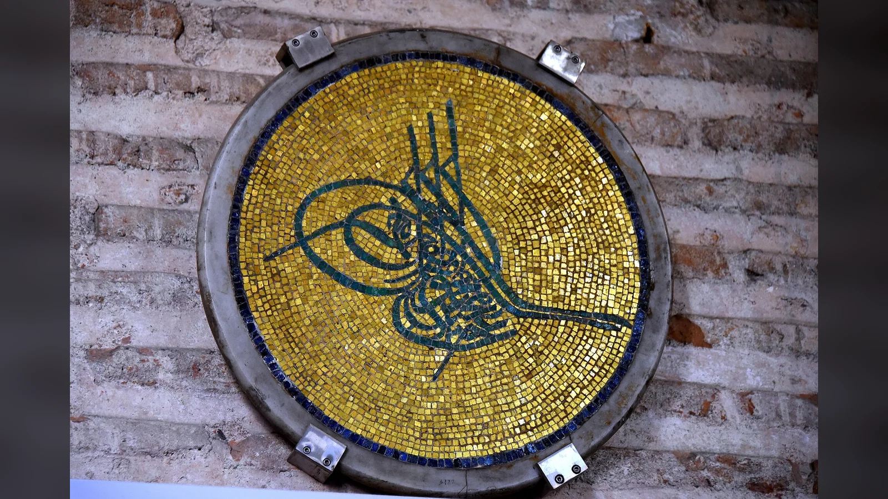
Bugünkü iç mekânda bu unsurlardan birini kaldırıp diğerini “gerçek Ayasofya” ilan etmek tarihsel süreci sadeleştirir. Apsis, kubbe ve sütunlar Justinianus’un yapısını; figürlü mozaikler farklı Bizans yüzyıllarını; mihrap, mahfiller ve hatlar Osmanlı kullanımını; açığa çıkarılmış yüzeyler ve koruma düzenekleri modern restorasyon tarihini aynı görüş alanına taşır.
Mekânın sanat tarihi açısından gücü tam da bu üst üste binmede görülür. Bir ziyaretçi aynı bakış çizgisinde apsis mozaiğini, kıbleye göre hafifçe dönen mihrabı, 19. yüzyıl hat levhalarını ve altıncı yüzyıl taşıyıcı sistemini görebilir. Bu öğeler aynı tarihte tasarlanmadı; bugün tek iç mekân deneyiminin parçaları hâline geldiler.
Ayasofya’da Malzeme, Renk ve İmparatorluk Coğrafyası
Ayasofya’nın içindeki mermerler yapısal malzemeden çok daha fazlasıdır. Duvar kaplamalarında ve sütunlarda farklı taşların yan yana kullanılması, imparatorluğun geniş coğrafyasını başkentte görünür hâle getiren bir estetik oluşturur. Prokonnesos’un açık renkli mermerleri, Tesalya’dan gelen yeşil taşlar, porfir tonları ve damarlı kaplamalar tekdüze beyaz bir iç mekân yerine güçlü bir renk düzeni yaratır. Bugün “Bizans kilisesi” denildiğinde akla gelen çıplak taş görüntüsü Ayasofya’nın altıncı yüzyıldaki algısını karşılamaz; mermer, altın mozaik, metal, tekstil ve ışık birlikte çalışıyordu.
Duvar kaplamalarında levhaların kesilip kitap sayfası gibi karşılıklı açılması özellikle önemlidir. Taşın doğal damarları mimari yüzeyde simetrik desenlere dönüşür. Bu uygulama resim değildir, fakat duvarı görsel olarak hareketlendiren bir kompozisyon üretir. Mermerin kendisi dekorasyonun konusu olur. İmparatorluk kaynaklarının pahalı malzemeleri Konstantinopolis’e taşıyabilmesi de Justinianus projesinin ekonomik ölçeğini gösterir.
Devşirme malzeme konusunda ise iki farklı olguyu ayırmak gerekir. Geç Antik Çağ’da eski yapılardan sütun ve mimari parçaların yeniden kullanılması olağandı; Ayasofya’da da farklı kökenli parçalar vardır. Buna karşılık her sütunun belirli bir pagan tapınağından getirildiğini anlatan ayrıntılı hikâyeler çoğu zaman daha geç kaynaklara veya modern tekrar zincirlerine dayanır. Özellikle Efes Artemis Tapınağı ve Mısır’daki antik anıtlarla kurulan kesin sayıdaki bağlantılar, fiziksel ve yazılı kanıt bulunmadan gerçek kabul edilmemelidir.
Malzeme çeşitliliği Ayasofya’nın imparatorluk fikrini açıklamak için yine de güçlüdür. Başkentteki büyük kilise, uzak bölgelerden taşınan taşların ve zanaat bilgisinin bir araya geldiği merkezdi. Bunu “bütün dünya Justinianus’un önünde eğildi” gibi retorik bir cümleye çevirmeye gerek yoktur. Lojistik ölçek, taşların kendisinde zaten görülebilir.
Depremler Ayasofya’nın Biçimini Nasıl Değiştirdi?
İstanbul’un deprem gerçeği Ayasofya’nın mimari tarihinden ayrı düşünülemez. Yapının büyük kubbesi ve geniş kemerleri düşey yüklerin yanında güçlü yatay kuvvetler üretir. Deprem sırasında bu karmaşık sistemdeki küçük deformasyonlar bile kubbe, kemer ve payeler arasında yeni gerilimler yaratabilir. Altıncı yüzyıldaki ilk çöküşten sonra daha yüksek kubbe yapılması, erken dönemde bile biçimin yapısal davranışa göre değiştirildiğini gösterir.
Sonraki onarımlar da aynı mantığın farklı teknolojilerle sürmesidir. Bizans ustaları çöken kemerleri ve kubbe dilimlerini yeniden kurdu; Osmanlı döneminde dış destekler büyütüldü ve Sinan’ın adıyla ilişkilendirilen güçlendirmeler yapının dışa açılmasına karşı çalıştı. Fossati restorasyonu 19. yüzyılda eğilmiş sütunları ve kubbe sorunlarını ele aldı. Modern mühendislik ise çatlak ölçümü, malzeme analizi, deprem modellemesi ve dijital belgeleme gibi yöntemlerle aynı temel soruya cevap arıyor: dev kubbeli sistem hareket ettiğinde yükler nereye gidiyor?
Bu yüzden Ayasofya’nın dış görünüşündeki düzensizlik bir tasarım başarısızlığının basit işareti değildir. Farklı boyutlardaki payandalar ve onarım izleri, yaklaşık on beş yüzyıllık müdahalenin sonucudur. Yapıyı Justinianus’un dönemindeki daha yalın dış kütleye geri döndürmek teorik olarak “özgünlüğü” artırıyor gibi görünebilir; fakat tarih boyunca eklenen desteklerin bir kısmı bugün taşıyıcı davranışın parçasıdır.
Ayasofya’nın korunmasında özgünlük bu nedenle yalnız ilk malzemeyi saklamak anlamına gelmez. Yapının tarihsel olarak kazandığı katmanları, sonraki dönemlerin taşıyıcı müdahalelerini ve kullanım izlerini de değerlendirmek gerekir. Bir payanda estetik olarak altıncı yüzyıl tasarımına yabancı olabilir, fakat beş yüz yıldır binanın tarihine ait olabilir.
Ayasofya’da Bizans ve Osmanlı Katmanları Birbirini Nasıl Değiştirdi?
1453’ten sonraki dönüşümde en çarpıcı değişiklik mekânın yönlendirilmesidir. Bizans litürjisi doğudaki apsis ve kutsal alan çevresinde örgütlenirken cami kullanımında kıble belirleyici oldu. İstanbul’dan Mekke’ye yönelen kıble, mevcut apsisin ekseniyle tam örtüşmediği için mihrap hafif açıyla yerleştirildi. Bu küçük geometrik sapma, iki dinî kullanımın aynı mimari kabuk içinde üst üste gelişinin en açık ayrıntılarından biridir.
Osmanlı ekleri merkezi hacmi parçalamak yerine büyük ölçüde onun içinde ve çevresinde yeni odaklar yarattı. Minber düşey vurgusuyla zemindeki ibadet düzenine katıldı; hünkar mahfili saray protokolünü cami içine taşıdı; müezzin mahfilleri kullanım ihtiyacına cevap verdi. Büyük hat levhaları ise kubbenin altındaki üst görsel kuşağa İslami yazıyı yerleştirdi. Böylece eski kilisenin mekânsal büyüklüğü yeni ibadet düzeninin de temel sahnesi oldu.
Mozaiklerin örtülmesi de bu dönüşümün tek aşamalı olmadığı noktayı gösterir. Yapı camiye çevrildiğinde her figürlü yüzeyin aynı anda ve aynı yöntemle ortadan kaldırıldığına dair basit bir model yoktur. Onarımlar, sıvalar, bezemeler ve değişen kullanım koşulları görünürlüğü zaman içinde değiştirdi. Fossati kardeşlerin 19. yüzyılda figürlü mozaikleri açıp belgeledikten sonra yeniden örtmesi, bu uzun sürecin geç bir örneğidir.
- yüzyılda mozaiklerin yeniden görünür olması mekâna üçüncü bir okuma daha ekledi. Müze ziyaretçisi Bizans figürlü sanatını ve Osmanlı hatlarını aynı anda görebiliyordu. 2020 sonrasında ibadet işlevinin yeniden başlaması bu birlikteliği ortadan kaldırmadı; görünürlüğün nasıl yönetileceği koruma ve kullanım tartışmasının merkezine yerleşti.
Ayasofya’nın Bugünkü Anlamı
Ayasofya’nın tarihi boyunca farklı iktidarlar yapıyı terk etmek yerine sahiplenmeyi seçti. Justinianus Nika İsyanı sonrasında başkentin merkezini onunla yeniden kurdu. Bizans imparatorları depremlerden sonra büyük masraflarla onardı. Osmanlılar 1453’ten sonra yapıyı yeni dinî işleve uyarladı ve güçlendirdi. Cumhuriyet yönetimi müzeye dönüştürerek başka bir kamusal kullanım tanımladı. 2020’de cami işlevi yeniden öne çıktı; koruma ve ziyaret ise devam etti.
Bu süreklilik, aynı işlevin korunması değildir. Tam tersine, Ayasofya’nın yaşayabilmesi işlev, görünüş ve kullanımın defalarca değişmesine bağlı kaldı. Bir dönemin eklediği payanda başka bir dönemin koruduğu kubbeyi taşırken, bir dönemde örtülen mozaik başka bir dönemde yeniden açıldı. Osmanlı hat levhaları kaldırılmak yerine müze döneminde de yapının tarihinin parçası olarak kaldı.
Ayasofya’nın UNESCO Dünya Mirası içindeki konumu da bu çok katmanlılığı uluslararası koruma çerçevesine taşır. Yapı 1985’ten beri İstanbul’un Tarihî Alanları kaydının temel anıtlarından biridir. Cami statüsü bu kaydı ortadan kaldırmadı; ibadet işlevi de tarihî ve sanatsal katmanların korunması sorumluluğunu sona erdirmedi.
“Özgün Ayasofya hangisidir?” sorusunun tek bir tarih seçilerek cevaplanamamasının nedeni budur. 537’deki yapı bugün bütünüyle mevcut değildir; fakat onun ana mekânsal fikri ayaktadır. Bizans mozaikleri yapının ilk gününe ait değildir ama Bizans tarihinin özgün parçalarıdır. Minareler ve hat levhaları Justinianus dönemine ait değildir ama yüzyıllarca süren Osmanlı tarihinin özgün parçalarıdır. Fossati ve modern konservasyon müdahaleleri de binanın bugünkü görünüşünü belirlemiştir.
Ayasofya’nın hikâyesi, değişmeden kalmış bir anıtın değil, değişiklikler sayesinde yaşamaya devam etmiş bir yapının tarihidir. Onu yaklaşık 1.500 yıl boyunca aynı binaya dönüştüren şey tek bir dönem değil; her dönemin önceki yapıdan devraldığı sorunlarla, anlamlarla ve malzemeyle yeniden ilişki kurmuş olmasıdır.
Sıkça Sorulan Sorular
Ayasofya ne zaman yapıldı?
Günümüzde gördüğümüz üçüncü Ayasofya’nın inşasına 532’de, Nika İsyanı’nda ikinci kilisenin yanmasından kısa süre sonra başlandı. Yapı 27 Aralık 537’de I. Justinianus döneminde ibadete açıldı. Ancak bina 537’deki hâlini değişmeden korumadı: ilk ana kubbe 558’de çöktü, 562’de yeniden yapılan bölümle yapı tekrar açıldı; sonraki depremler, Bizans ve Osmanlı onarımları ile modern restorasyonlar bugünkü görünüşü oluşturdu.
Ayasofya’yı kim yaptırdı?
Bugünkü Ayasofya’yı Doğu Roma İmparatoru I. Justinianus yaptırdı. Proje, 532’de Nika İsyanı sırasında yanan ikinci Ayasofya’nın yerine başlatıldı. Justinianus yapıyı büyük imparatorluk inşa programının merkezine yerleştirdi. Ayasofya’nın bugünkü biçimini yalnız Justinianus’a bağlamak yine de eksiktir; sonraki Bizans imparatorları, Osmanlı sultanları ve restorasyon ekipleri kubbe, taşıyıcılar, dış destekler ve iç dekorasyon üzerinde önemli değişiklikler yaptı.
Ayasofya’nın mimarları kimlerdir?
Ayasofya’nın tasarım ve yapımından Trallesli Anthemios ile Miletoslu İsidoros sorumluydu. İkisi geometri ve mekanik bilgileriyle tanınan eğitimli uzmanlardı. 558’de ilk ana kubbe çöktüğünde yeniden yapımı İsidoros’un yeğeni Genç İsidoros üstlendi ve kubbeyi daha yüksek bir profile kavuşturdu. Temel tasarım Anthemios ile İsidoros’a ait olsa da bugün görülen üst yapının tarihinde Genç İsidoros’un müdahalesi de belirleyicidir.
Günümüzdeki Ayasofya kaçıncı yapıdır?
Üçüncü yapıdır. İlk büyük kilise 4. yüzyılda açıldı ve 404 olaylarında yandı. II. Theodosius döneminde yapılan ikinci kilise 415’te açıldı; 532’de Nika İsyanı sırasında çıkan yangınlarda yok oldu. Justinianus bunun yerine günümüzdeki Ayasofya’yı yaptırdı. İlk iki yapının mimarisi hakkında bilgilerimiz bugünkü bina kadar ayrıntılı değildir.
Ayasofya’nın kubbesi neden çöktü?
537’deki ilk kubbe, yapının büyük açıklıkları ve basık geometrisi nedeniyle güçlü yatay itkilere sahipti. Açılıştan sonraki depremler taşıyıcı sistemde hasarı artırdı ve kubbenin önemli bölümü 558’de çöktü. Genç İsidoros yönetimindeki yeniden yapımda kubbenin profili yükseltildi. Ayasofya daha sonraki yüzyıllarda da deprem hasarı gördü; özellikle 989 ve 1346 olayları büyük onarımlar gerektirdi.
Ayasofya ne zaman camiye çevrildi?
Ayasofya, II. Mehmed’in Konstantinopolis’i 29 Mayıs 1453’te fethetmesinin ardından camiye çevrildi. İslami ibadet için mihrap, minber ve zamanla başka unsurlar eklendi; minareler farklı Osmanlı dönemlerinde inşa edildi. Yapı yaklaşık beş yüzyıl cami olarak kullanılırken düzenli onarım ve güçlendirme de gördü.
Ayasofya ne zaman müze oldu?
Ayasofya’nın müzeye çevrilmesine 24 Kasım 1934 tarihli Bakanlar Kurulu kararıyla karar verildi ve yapı 1935’te müze olarak açıldı. 1934 karar yılı, 1935 müze kullanımının başladığı yıldır. Thomas Whittemore ve Byzantine Institute’un mozaikleri ortaya çıkarma çalışmaları da 1930’lardan itibaren devam etti; figürlü mozaiklerin açılması tek günde gerçekleşen bir işlem değildi.
Ayasofya ne zaman yeniden cami oldu?
Danıştay Onuncu Dairesi 2 Temmuz 2020’de 1934 tarihli müzeye dönüştürme kararını iptal etti. Ardından 10 Temmuz 2020 tarihli Cumhurbaşkanı Kararı ile Ayasofya’nın yönetimi Diyanet İşleri Başkanlığına devredildi ve ibadete açılması kararlaştırıldı. İlk cuma namazı 24 Temmuz 2020’de kılındı. Ayasofya’nın UNESCO Dünya Mirası kapsamındaki konumu sona ermedi.
Ayasofya’daki mozaikler neden kapatıldı?
Mozaiklerin örtülmesi tek bir tarihte ve tek bir yöntemle gerçekleşmedi. Ayasofya 1453’ten sonra cami olarak kullanılırken figürlü Hristiyan tasvirlerinin görünürlüğü zaman içinde sıva, badana ve bezeme uygulamalarıyla azaltıldı. 1847–1849 Fossati restorasyonunda bazı mozaikler açılıp belgelendi, ardından cami işlevi nedeniyle yeniden örtüldü. 20. yüzyıldaki müze döneminde Byzantine Institute ekipleri birçok mozaiği yeniden açığa çıkardı.
Ayasofya’nın altında tüneller var mı?
Ayasofya’nın altında su kanalları, kuyular, drenaj sistemleri, sarnıçlarla ilişkili alanlar ve yapısal boşluklar bulunduğu belgelenmiştir. Fakat bunların tamamına “gizli tünel” demek doğru değildir. Ayasofya’dan Topkapı Sarayı’na, Adalar’a veya İstanbul’un uzak noktalarına uzanan büyük gizli geçit ağlarının bulunduğuna dair popüler iddialar arkeolojik olarak kanıtlanmış değildir.
Ayasofya’daki Viking yazısında ne yazıyor?
En ünlü güney galeri yazısının yalnız bir bölümü güvenle okunabilir ve “-lftan” harfleri Halfdan/Halvdan adı olarak yorumlanır. “Halfdan buradaydı” popüler bir özet olsa da korunmuş metnin kesin tam çevirisi değildir. Başka bir runik yazı ise akademik çalışmada “Arinbárðr bu runları kazıdı” şeklinde okunmuştur. Yazılar, Orta Çağ Konstantinopolis’indeki İskandinav varlığının fiziksel izleri olarak önemlidir.
Ayasofya UNESCO Dünya Mirası Listesi’nde mi?
Evet, fakat teknik olarak Ayasofya tek başına bağımsız bir Dünya Mirası kaydı değildir. 1985’te UNESCO Dünya Mirası Listesi’ne alınan “İstanbul’un Tarihî Alanları” adlı alanın temel anıtlarından biridir. Ayasofya’nın 2020’de yeniden cami olarak kullanıma açılması bu statüyü ortadan kaldırmadı. UNESCO Dünya Mirası Komitesi koruma çalışmaları ve ziyaretçi yönetimini izlemeyi sürdürmektedir.
Kaynakça
- Procopius. Buildings / De Aedificiis. Loeb Classical Library, Harvard University Press.
- Mainstone, Rowland J. Hagia Sophia: Architecture, Structure and Liturgy of Justinian’s Great Church. Thames & Hudson, 1988.
- Mark, Robert; Çakmak, Ahmet S. (ed.). Hagia Sophia from the Age of Justinian to the Present. Cambridge University Press, 1992.
- Mango, Cyril. Byzantine Architecture. Electa/Rizzoli.
- Krautheimer, Richard. Early Christian and Byzantine Architecture. 4. baskı, Penguin, 1986.
- Ousterhout, Robert. Master Builders of Byzantium. Princeton University Press, 1999.
- Teteriatnikov, Natalia B. Mosaics of Hagia Sophia, Istanbul: The Fossati Restoration and the Work of the Byzantine Institute. Dumbarton Oaks.
- Whittemore, Thomas. Byzantine Institute’un Ayasofya mozaikleri üzerine raporları, Dumbarton Oaks / Byzantine Institute arşivleri.
- Fossati, Gaspare. Aya Sofia, Constantinople: As Recently Restored by Order of H.M. the Sultan Abdulmedjid.
- Doğan, Sema. “The Restorations at the Istanbul Ayasofya Mosque and the Documents Recording the Restoration Work during the Reign of Sultan Abdulmajid.” bilig, 49, 2009, 1–34.
- Mel’nikova, Elena A. “A New Runic Inscription from Hagia Sophia Cathedral in Istanbul.” Futhark 7 (2016/2017), 101–110.
- Svärdström, Elisabeth. “Runorna i Hagia Sofia.” Fornvännen 65, 1970, 247–249.
- The Metropolitan Museum of Art. “Hagia Sophia, 532–37.” Heilbrunn Timeline of Art History.
- UNESCO World Heritage Centre. “Historic Areas of Istanbul”, World Heritage List No. 356bis.
- UNESCO World Heritage Committee. “Historic Areas of Istanbul (Türkiye)”, Decision 47 COM 7B.131, 2025.
- T.C. Danıştay Onuncu Dairesi. E. 2016/16015, K. 2020/2595, 2 Temmuz 2020.
- T.C. Resmî Gazete. Cumhurbaşkanı Kararı No. 2729, 10 Temmuz 2020.
- T.C. Kültür ve Turizm Bakanlığı / Vakıflar Genel Müdürlüğü. Ayasofya-i Kebir Cami-i Şerifi ziyaretçi yönetimi ve restorasyon açıklamaları, 2023–2025.
- British School at Athens, Byzantine Research Fund Digital Collections. Thomas Whittemore Ayasofya fotoğraf arşivi.
- Dumbarton Oaks Research Library and Collection. Hagia Sophia / Byzantine Institute arşiv ve araştırma koleksiyonları.